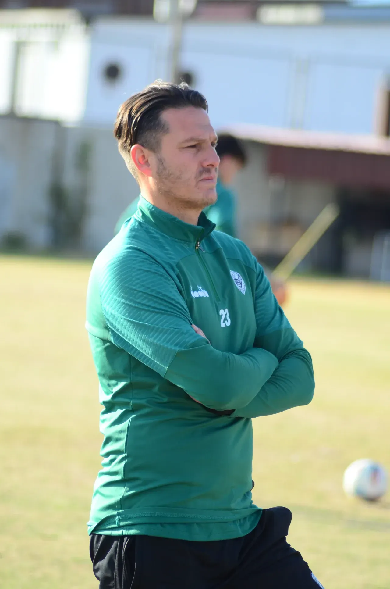

.png)

Nazilli Çıkışta
Hafta içinde gelen 3 puan silme cezasının moral bozukluğuyla Mersin İdman Yurdu deplasmanına giden Nazillispor, sahadan 1-0’lık galibiyetle ayrılarak kümede kalma adına çok kritik bir galibiyet aldı. Siyah-beyazlı ekip, yeni teknik direktörü Hakan Fırıloğlu yönetiminde çıktığı ikinci maçtan da galibiyetle dönerek moral depoladı.
Maç sonrası açıklamalarda bulunan teknik direktör Hakan Fırıloğlu, 3 puan silinme cezasının açıklanma zamanlamasının takımı olumsuz etkilediğini belirtti. “Cezanın açıklanması hepimizi üzdü. Seyahat öncesinde mental olarak yoğun bir süreç yaşadık. Oyuncularımız bu durumu sahada atlatmayı başardı” diyen Fırıloğlu, maçın ilk 20 dakikasında sahaya yansıyan gerginliği vurguladı.
“Maçın başında oyuna girmekte zorlandık ama 20. dakikadan sonra toparlandık. İkinci yarıda oyun planına sadık kalarak istediğimiz pozisyonları bulduk. Oğuzhan Akgün’ün güzel golüyle galibiyete ulaştık. Bazı maçlarda kötü oynayıp kazanmak da önemlidir; bu galibiyet de öyleydi” ifadelerini kullanan Fırıloğlu, oyuncuların mücadelesinden duyduğu memnuniyeti dile getirdi.